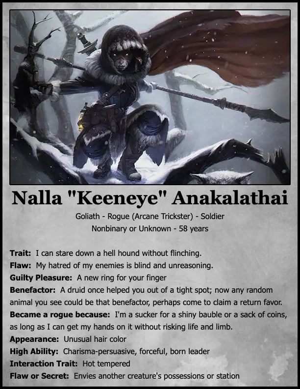
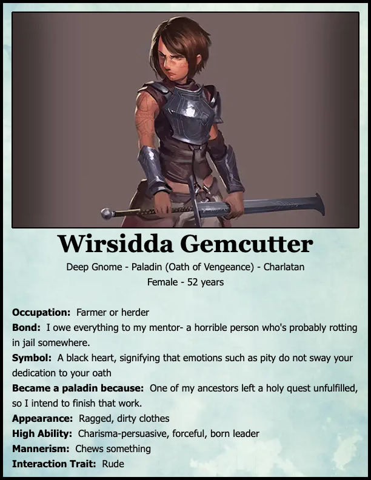
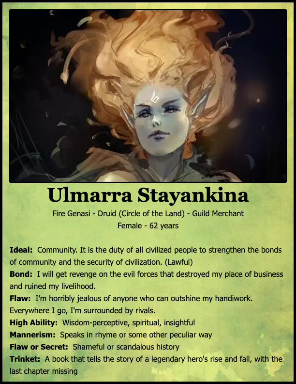
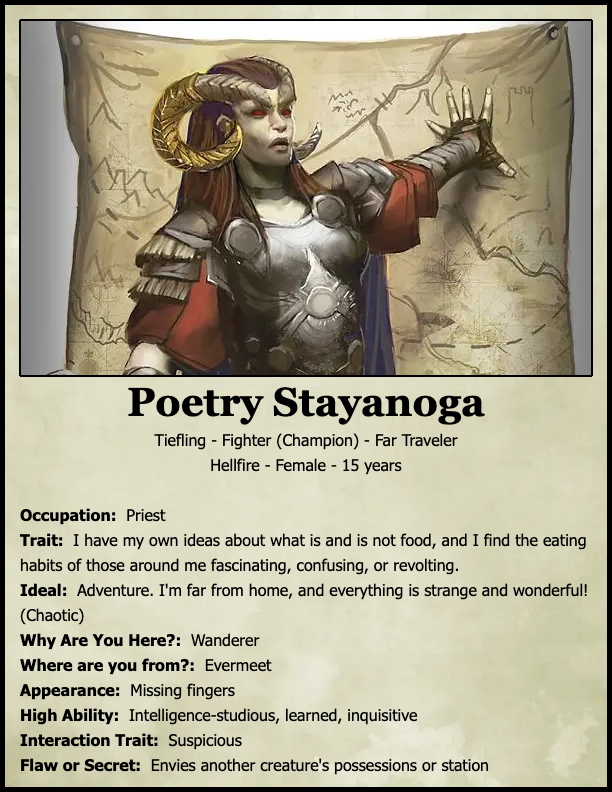
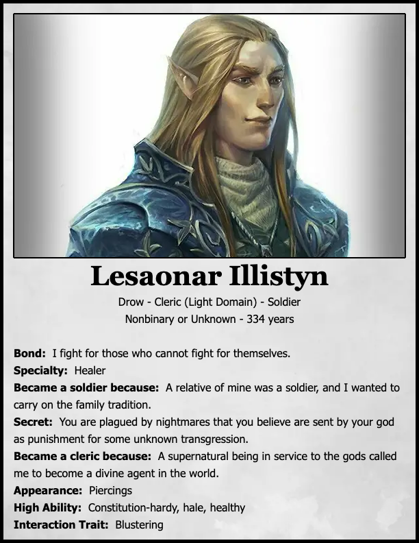
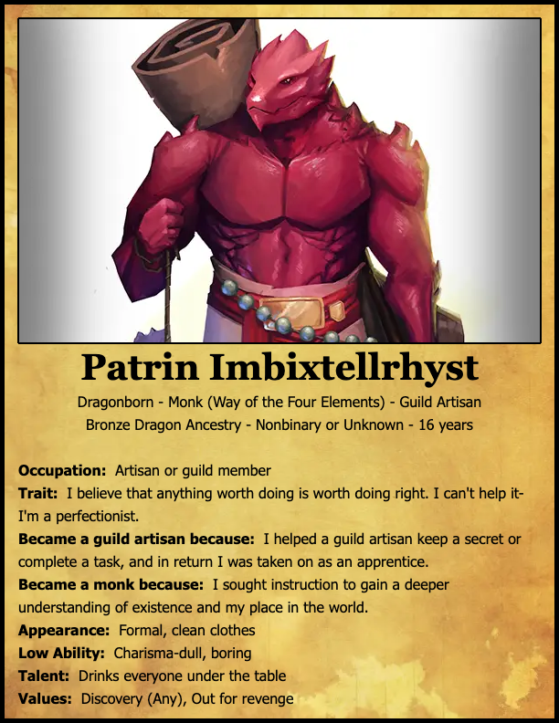
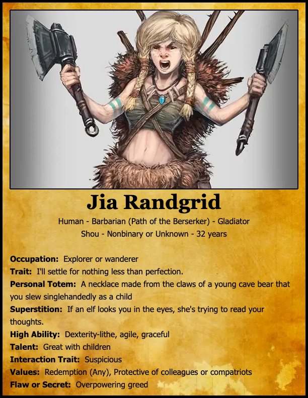

Spooky Game Character Ideas
Date: 2023-10-17
Nalla Anakalathai - Goliath Rogue (Arcane Trickster)

Wirsidda Gemcutter - Gnome Paladin (Oath of Vengeance)

Ulmarra Stayakina - Fire Genasi Druid (Land|Wildfire)

Poetry Stayanoga - Tiefling Fighter (Champion|Eldritch Knight)

Lesaonar Illistyn - Drow Cleric (Light Domain)

Patrin Imbixtellrhyst - Dragonborn Monk (Way of the Four Elements)

Jia Randgrid - Human Barbarian (Path of the Berserker)

Nogu Evenwood - Half-Orc Wizard (School of Illusion)